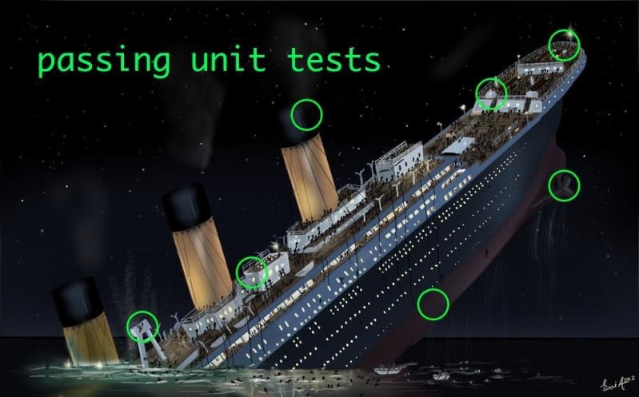

Tests
J.-M. Brueljbruel@gmail.com
version 1.0 2020-11-29
Materials in live…
Tests
Whatever development method you apply, tests are the only way to ensure that the delivered product conforms to the client’s requirements.
Unit Tests
They are the simplest. But hence it is needed to …
- forget 'manual' approaches
- explore their 'limitations'
- treate both the 'qualitative' and 'quantitative' aspects
Unit Tests
Let’s consider the implementation of an abstract type: MatrixInt
Unit Tests (operations)
Operations
createMatrix : Int * Int → MatrixIntgetNbLines: MatrixInt → IntgetNbColumns: MatrixInt → Int- …
Unit Tests (preconditions)
Preconditions
createMatrix(l,c) valid IF and ONLY IF ( l > 0 ) AND ( c > 0 )getElement(m,i,j) valid IF and ONLY IF ( 0 < = i < getNbLines(m) ) AND ( 0 < = j < getNbColumns(m))- …
Unit Tests (axioms)
Axioms
getNbLines(createMatrix(l,c)) = lgetNbColumns(createMatrix(l,c)) = cgetElement(createMatrix(l,c),i,j) = 0isSquared(createMatrix(l,c)) IF and ONLY IF l = c- …
Unit Tests (testing operations)
Unit Tests (testing preconditions)
Unit Tests (testing axioms)
Unit Tests (testing additional operations)
Unit Tests
The testing program is :
a regression detection tool
- that should be run on each modification of the
MatrixIntclass
- that should be run on each modification of the
a specification documentation
- precise AND concise
a programmers' documentation
- operational
Integration Tests

Integration Tests

Integration Tests
It a more complicated activity. It is required to:
- test the client’s expectations/requirements
- test systems' interactions
- no redo the unit tests
Integration Tests
Testing program of
JourSuivantAvecLibDate.classimport junit.textui.TestRunner;
import junit.framework.TestSuite;
import junit.framework.TestCase;
import java.io.*;
public class JourSuivantAvecLibDateTest extends TestCase {
static String programmeATester = "JourSuivantAvecLibDate" ; (1)
Process executionProgrammeATester ; (2)
BufferedReader ecranProgrammeATester ; (3)
BufferedWriter clavierProgrammeATester ; (4)
String finDeLigne = System.getProperty("line.separator") ; (5)
public static void main(String[] args) {
if ( args.length > 0 ) { programmeATester = args[0] ; }
System.out.println("Tests du programme : " + programmeATester);
junit.textui.TestRunner.run(new TestSuite(JourSuivantAvecLibDateTest.class)); (6)
}
protected void setUp() throws IOException { (7)
executionProgrammeATester = Runtime.getRuntime().exec("java -cp . "+programmeATester); (8)
ecranProgrammeATester = new BufferedReader(new InputStreamReader( executionProgrammeATester.getInputStream() )); (9)
clavierProgrammeATester = new BufferedWriter(new OutputStreamWriter( executionProgrammeATester.getOutputStream() )); (10)
}
// Saisies valides
public void test_31_1_2013() throws IOException {
assertEquals("Affiche : 'Saisir une date : jour mois annee ? '","Saisir une date : jour mois annee ? ",ecranProgrammeATester.readLine()); (11)
clavierProgrammeATester.write("31 1 2013"+finDeLigne); (12)
clavierProgrammeATester.flush(); (13)
assertEquals("Affiche : 'Le lendemain du 31/1/2013'","Le lendemain du 31/1/2013",ecranProgrammeATester.readLine());
assertEquals("Affiche : 'sera le 1/2/2013.'","sera le 1/2/2013.",ecranProgrammeATester.readLine()); (14)
}| 1 | name of the app to be tested |
| 2 | Process = the running program |
| 3 | link to the display of the running program |
| 4 | link to the keyboard of the running program |
| 5 | portable carrier return |
| 6 | launching of all the functions starting by 'test' |
| 7 | function (re-)executed before each testing function AND launch the program to be tested |
| 8 | launching of the program |
| 9 | connect to the display |
| 10 | connect to the keyboard |
| 11 | read a line on the display |
| 12 | send a line to the keyboard |
| 13 | force the keyboard flush |
| 14 | read another line on the display |
Tests implement simple algorithms
public void test_dates_invalids() {
int[][] tabJeuDEssaiDatesInvalids = { (1)
{1,1,1581},{0,1,2013},{99,99,2099},
{32,1,2013},{29,2,2013},{32,3,2013},
{31,4,2013},{32,5,2013},{31,6,2013},
{32,7,2013},{32,8,2013},{31,9,2013},
{32,10,2013},{31,11,2013},{32,12,2013},
{29,2,1900},{30,2,2000}
} ;
for ( int indice = 0, taille = tabJeuDEssaiDatesInvalids.length;
indice < taille ;
indice = indice + 1){
int[] date = tabJeuDEssaiDatesInvalids[indice] ;
assertFalse(date[0]+"/"+date[1]+"/"+date[2]+" est invalid"
, LibDate.datevalid(date[0],date[1],date[2])); (2) (3)
}
bilanAssertions = bilanAssertions + tabJeuDEssaiDatesInvalids.length ;
}| 1 | given: in the following situations |
| 2 | when: when we check the validity of a date |
| 3 | then: we should get false |
Can everything be tested ?
- librairies
- system interactions (concurrency, etc.)
- network services
- graphical interfaces (html, java, flash, etc.)
- …
- MAY BE NOT, but try anyway!
All the strategies are exploitable
|
Most common mistakes in programming
Ready for a quizz?
Ready for a quizz?
|
QUESTION
|
/